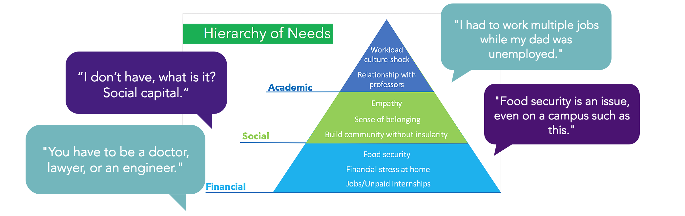

Client:
Dartmouth College
Role:
UX Designer
UX Researcher
Tools:
Interviewing
Prototyping
Deliverables:
Hierarchy of needs
Class Presentation
Assignment:
For my final group project, our challenge was to explore opportunities to improve the experiences of first-generation students at Dartmouth College.
Process:
From the 40+ interviews that we conducted, we confirmed that first generation college students have a lot to say about the topic.
We heard:
- One story about a student who had to work multiple jobs on campus in order to support her family back at home when her father was unemployed.
- One story about a father telling his daughter to be a doctor, lawyer, or engineer because those were “practical” paths and would ensure financial security.
- And one story about a student who went on Tinder dates to guarantee food for herself during breaks because the dining halls were closed.
Take #1:
My partners and I were extremely excited about the data we had collected across campus. We sat down and parsed through hours of interviews, writing down the strongest phrases and common themes on post-it notes that we then placed on a big whiteboard. This helped us visualize the intensity of our problem.
From these interviews, we developed a hierarchy of needs.

A major insight we gleaned from our research was a genuine lack of understanding and empathy for first generation college students.
We heard stories about students feeling too intimidated to going into office hours, strained relationships with parents, feeling lost in a sea of Canada Goose Jackets, and not having the same
networks and opportunities as
legacy students.
One of the students I interviewed mentioned that she wished her parents could understand how difficult it was to be at an ivy league school. She wanted their support but didn’t know how to ask for it without needing her parents’ time and
energy, which she knew would be difficult.
As a first-generation college student myself, I struggled to not feel so emotional and had
to communicate
to my team how personal this subject was for me. I started to talk about all of the moments I felt marginalized on campus, misunderstood, and excluded, and then my team and I pin-pointed similar emotions and moments in our data. In
our first iteration, we
focused on the relationship between parents and first-generation college students, and the inherent cultural/knowledge gap that comes with being a first-gen student.
First solution: Facilitating a discount care-package program for first generation college students.
In college, students sometimes receive care packages from their families back home. Recognizing the impact such a subtle token of support on students’ emotional well-being, my team pitched the idea of facilitating a discount care-package program for first generation college students through Dartmouth. Ideally, parents would receive a catalog at the beginning of every term where they could select a few items and write a supportive note that would be delivered to their child right before midterms.
Feedback: The care package program does not solve main problem, lack of empathy.
Although the prospect of launching a care package program received positive feedback, it failed to take advantage of the rich data we collected through our interviews. We also recognized that a care package program doesn’t exactly solve the lack of empathy across campus for first generation students. And so my team went back to the drawing board to see how we could improve our solution.
In our next iteration, we focused on the stories about accomplishments and hope for first-generation college students.
There are bright spots in the first generation community on campus that need to be recognized. These are the bright spots that we need to highlight so that other first generation students know that they have the potential to succeed in whatever field they choose. So how can we give them that feeling?
We propose...

Trailblazer is an annual multilingual publication that highlights the stories and experiences of first generation students, parents, faculty and alumni of Dartmouth.
Through Trailblazer, students, faculty, and families can read about the dark spots, like the story about the student who had to work multiple jobs, but also the bright spots: the student who got his research trip fully funded, the student who continued to pursue a computer science major despite her self-doubts, and the student who maintained a 4.0 while working three jobs.
We want to celebrate the grit and resilience of first generation students and connect them with people who have shared similar stories.
How does it work?
First-gen students, alumni, faculty, and parents of those first-gen students share their stories with the team at Trailblazer, who work with FYSEP and OPAL. They compile the most compelling stories, and distribute them to all students, parents, faculty, and alumni of Dartmouth College at the beginning of each school year.
What will be the impact?
Through sharing these stories, Trailblazer strives to create a community of empathy.
We decided to use stories because stories impact people on an emotional level that is necessary for meaningful change in attitudes and behaviors. We’re striving to increase awareness within the entire Dartmouth community by
making
known those stories
that are too often kept silent.
Currently, students feel like parents just don’t understand their experiences at Dartmouth. But with Trailblazer, parents can read stories, in their first languages, about students
and alumni
who have overcome challenges and achieved success, as well as stories about life at Dartmouth, taking the burden off their children to try to explain the complex bubble of Dartmouth. Parents might even begin to feel comfortable enough to
initiate
college related conversations, too.
With Trailblazer, parents can:
- Understand the importance of a liberal arts education
- See how majors lead to careers
- Learn what college life is like
Some students feel like professors are intimidating.
But Trailblazer will help professors learn more about students’ backgrounds and experiences to increase their awareness. Professors can empathize
with
students’
experiences
they
may not have known about
before and feel encouraged to reach out.
Alumni can serve as powerful role models. Trailblazer will engage Alumni who have experiences, tools, and resources that they can share with current students. Also,
their stories
can inspire first generation students. Trailblazer can connect the brainpower Dartmouth cultivates and truly make an impact.
Lastly, peers can be exclusive. Reading Trailblazer increases sensitivity to other’
backgrounds in
order
to build a more understanding community.
We do not want the stories of first generation students to be forgotten when they graduate.
Throughout their experiences at Dartmouth, all students learn and grow. Through
Trailblazer,
we
can empower writers to celebrate their experiences and identities, instill empathy in non-first generation professors and students, and reassure parents that their children can be successful in following their passions. Most
importantly,
Trailblazer
can inspire first generation students by celebrating their grit and resilience, and by increasing their confidence in their own identities.